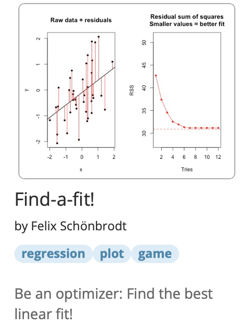
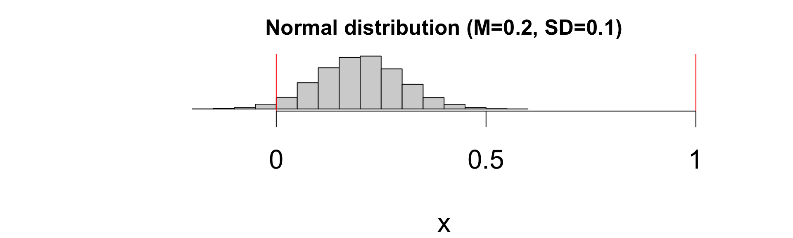
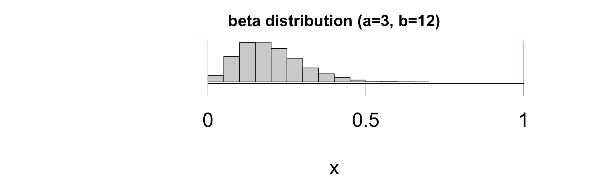
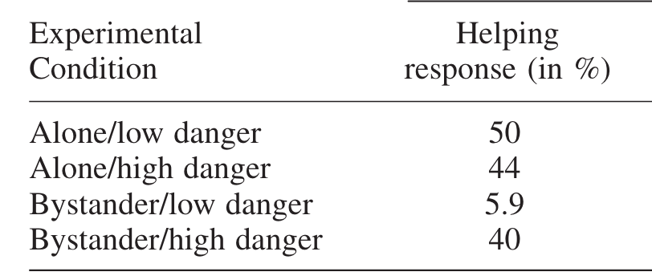

Mathematical Modeling of Psychological Theories
Introduction
![]()
Answer: -136.7
Step 1: Define variables
Define variables
How deep is your love?
Define a variable for each construct of the VAST display. These can be measured variables or unmeasured (mediating) variables.
You can either refer to an actual measurement procedure or simply define a variable. In both cases you should explicitly define the following properties:
- variable name (i.e., to which concept in your VAST display does it refer?),
- scale level (categorical, ordinal, interval scale),
- range of possible values (e.g., 0 … 1),
- semantic anchors (e.g., 0 = “complete absence”, 1 = “maximal possible value”)
Define variables
Some guiding questions and heuristics
- Type of variable: continuous, dichotomous, ordinal, categorical?
- Scale level of measurement (Stevens’s typology):
Nominal → Ordinal → Interval → Ratio - Is the variable naturally bounded? On both sides or only one?
- How can the numbers be interpreted?
- Natural/objective scale (e.g. physical distance)
- As standardized z-scores?
- Normalized to a value between 0 and 1? Or rather -1 to 1?
- Can we find an empirical or semantic calibration?
- Just noticable difference
- 100 = “largest realistically imaginable quantity of that variable”
Group work (15 min.): Specify variables
In the Google doc, below your Construct Source Table, create a new Variables Table with the following columns:
Example:
| Construct in VAST display | Shortname | Type | Range/values | Anchors |
|---|---|---|---|---|
| Affective tone of instruction | aff_tone | Continuous | [-1; 1] | -1 = maximally negative 0 = neutral +1 = maximally positive |
| Anxiety | anxiety | Continuous | [0; 1] | 0 = no anxiety 1 = maximal anxiety |
| Kohlberg’s Stages of Moral Development | moral_stage | Ordinal | {1; 2; 3} | 1=Pre-conventional 2=Conventional 3=Post-Conventional |
| … | … | … | … |
Note: This resembles a codebook; but for theoretical variables, not only for measured variables. As a heuristic, list all concepts that are not higher-order concepts (because these usually have no single numerical representation).
Step 2: Define functional relationships between variables
Group work (10 min.)
Sketch a first functional relationship on paper
We want to model the following phenomenon (a specific version of the bystander effect):
- Without other people present, the tendency (probability or frequency) that a person helps a victim is high.
- The tendency of helping a victim decreases monotonically with the number of other people (bystanders) present.
- The tendency of helping a victim never drops to 0.
Task: Sketch a first functional relationship that could model this phenomenon. Use the variables you defined in the previous step (including their labels and ranges).
Step 2: Define functional relationships between variables
Every causal path needs to be implemented as a mathematical function, where the dependent variable/output \(y\) is a function of the input variable(s) \(x_i\).
\(y = f(x_1, x_2, ..., x_i)\)
This can, for example, be a linear function, \(y = \beta_0 + \beta_1x_1\).
Step 2: Define functional relationships between variables
Fixed and free parameters
\(\color{red} y = \color{forestgreen} \beta_0 \color{black} + \color{forestgreen} \beta_1 \color{blue} x\)
→ \(\color{red} y\) = output variable, \(\color{forestgreen} \beta\)s = parameters, \(\color{blue} x\) = input variable.
Two types of parameters:
- Fixed parameters: Parameters that are chosen a priori and do not change in the light of empirical data. Their values are based on previous research, theory, or external information (such as properties of the world).
- Free parameters: Can be adjusted to optimize the fit of the model to data. They are estimated from empirical data.
Note
Virtually all parameters (except natural constants) could be imagined as being free. It is a choice to fix some of them in order to simplify the model.
Step 2: Define functional relationships between variables
Fixed and free parameters
Fixing a parameter:
\(\color{forestgreen} \beta_0 \color{black} = 1 \rightarrow \color{red} y = \color{forestgreen} 1 \color{black} + \color{forestgreen} \beta_1 \color{blue} x\)
That means, the slope \(\color{forestgreen} \beta_1\) still can vary, but the intercept is fixed to 1.
Free parameters give flexibility to your function: If you are unsure about the exact relationship between two variables, you can estimate the best-fitting parameters from the data.
For example, sometimes a theory specifies the general functional form of a relationship (e.g., “With increasing \(x\), \(y\) is monotonously decreasing”), but does not tell how fast this decrease happens, where \(y\) starts when \(x\) is minimal, etc. These latter decisions are then made by the free parameters.
Discussion
Sketch a first functional relationship on paper
- Which aspects of your sketched function could be free parameters? Describe them in plain language.
- Draw a couple of alternative plots that (a) follow the same functional form and (b) also fullfill the criteria of the phenomenon.
- What is the semantic meaning of the free parameters?
Some mathematical tools
Tool 1: The logistic function family
As a linear function is unbounded, it can easily happen that the computed \(y\) exceeds the possible range of values.
If \(y\) has defined boundaries (e.g., \([0; 1]\)), a logistic function can bound the values between a lower and an upper limit (in the basic logistic function, between 0 and 1):
\(y = \frac{1}{1 + e^{-x}}\)
Tool 1: The logistic function family
With the 4PL* model from IRT, you can adjust the functional form to your needs, by:
- shifting the inflection point from left to right (aka. “item difficulty”, parameter \(d\))
- change the steepness of the S-shape (aka. “discrimination parameter”, parameter \(a\))
- Move the lower asymptote up or down (parameter \(min\))
- Move the upper limit up or down (parameter \(max\))
logistic <- function(x, d = 0, a = 1, min = 0, max = 1) {
min + (max - min)/(1 + exp(a * (d - x)))
}Tool 1: The logistic function family
(basic logistic function as dotted grey line)
Tool 1: The logistic function family
The d, a, min, and max parameters can be used to “squeeze” the S-shaped curve into the range of your variables. For example, if your \(x\) variable is defined on the range \([0; 1]\), the following function parameters lead to a reasonable shift:
Use the full mathematical toolbox
Of course, the logistic function and the beta distribution are just a start - you can use the full toolbox of mathematical functions to implement your model!
Note
These considerations about functional forms, however, are typically not substantiated by psychological theory or background knowledge - at least at the start of a modeling project. We choose them, because we are (a) acquainted to it, and/or (b) they are mathematically convenient and tractable.
Empirical evidence can inform both your choice of the functional form, and, in a model-fitting step, the values of the parameters.
Step 3: Implement the functions in R
Excursus: Functions in R
- What is a function?
- A reusable block of code designed to perform a specific task.
- Can be an implementation of an actual mathematical function \(y = f(x, z)\)
- But can also be a more complex operation, like reading a file, transforming data, or plotting a graph.
- Why use functions?
- Modularity: Break down complex problems into manageable parts.
- Reusability: Write once, use multiple times.
- Maintainability: Easier to debug and update code.
Anatomy of an R Function
# Basic structure of a function
my_function <- function(arg1, arg2) {
# Function body
result <- arg1 + arg2
return(result)
}- Function name:
my_function - Parameters:
arg1,arg2 - Body: Code that defines what the function does
- Return value: return a specific value that has been computed in the function body with
return(return_variable). If no explicitreturn()statement is given, the last evaluated expression is returned by default.
# use meaningful names
sum <- function(x, y) {
S <- x+y
return(S)
}# short version: the last computation
# is returned by default
sum <- function(x, y) {x+y}Creating and Using Your Own Function
- Define the Function:
get_y <- function(x) {
y <- x^2
return(y)
}- Call the Function:
y <- get_y(x=2)
print(y) # Output: 4Tips:
- Use meaningful and short names for functions and parameters.
- Keep functions focused on a single task.
- Document your functions with comments (ideally with the
roxygen2documentation standard) - Atomic functions: Each
Rfunction implements exactly one functional relationship of your model.
Example with roxygen2 documentation
#' Compute the updated expected anxiety
#'
#' The expected anxiety at any given moment is a weighted average of
#' the momentary anxiety and the previous expected anxiety.
#'
#' @param momentary_anxiety The momentary anxiety, on a scale from 0 to 1
#' @param previous_expected_anxiety The previous expected anxiety, on a scale from 0 to 1
#' @param alpha A factor that shifts the weight between the momentary anxiety (alpha=1)
#' and the previous expected anxiety (alpha=0).
#' @return The updated expected anxiety, as a scalar on a scale from 0 to 1
get_expected_anxiety <- function(momentary_anxiety, previous_expected_anxiety, alpha=0.5) {
momentary_anxiety*alpha + previous_expected_anxiety*(1-alpha)
}roxygen2 comments start with #' and are placed directly above the function definition.
- The first line is the title
- The following lines (after a blank line) are the description
- Each parameter of the function is documented with
@param parameter_name Description. Provide the range of possible values if applicable. - The return value is documented with
@return Description
Exercise: Document our exponential decay function
Check out roxygen2 and document our exponential decay function with:
- title
- description
- parameters
- return value.
get_p_help <- function(NOPB, y_0, y_final, BSE_strength) {
p_help <- y_final + (y_0 - y_final) * exp(-BSE_strength * NOPB)
return(p_help)
}Apply everything to reduced model
- Define all variables of your model in the Variables Table (short name, range, scale level, semantic anchors). Variables
- Categorize: Which variables are exogenous, which are endogenous?
- Exogenous variables are not influenced by other variables in the model.
- Endogenous variables are influenced by other variables in the model.
- Every endogenous variable is a function of all of their input parameters.
- Create sensible functional relationships for every endogenous variable.
- Create a 3rd table (below the Construct Source Table and the Variables Table), with all functional relationships.
- Add a short comment to what extent this functional relationship has been derived from theory:
- Dictated by theory (add IDs from the Construct Source Table as reference)
- Derived from theory
- Loosely inspired by theory
- Not based on focal theory, but rather on common sense or other theories
- Add a short comment to what extent this functional relationship has been backed by empirical evidence.
- Implement the functions in
Rwith properroxygen2documentation.
Step 3: Implement the functions in R
Put everything together
Connect all functions to one “super-function”, which takes all exogenous variables as input and computes the focal output variable(s).
Test the super-function:
- Enter some reasonable combinations of parameters
- Draw plots where you vary one parameter on the x-axis and see the behavior of the output variable on the y-axis.
Step 4 (Excursus): Fitting the functions to empirical data
Step 4 (Excursus): Fitting the functions to empirical data
We can tune our free parameters to fit the model as good as possible to empirical data. This is called model fitting.
See the Find-a-fit app for an example of a simple linear regression with two parameters (intercept and slope) that are fitted by an optimization algorithm:

Step 5: Simulate a full data set
Step 5: Simulate a full data set
5a: Create a design matrix for experimental factors
Create a design matrix for all possible combinations of experimental factors (i.e., those variables that you control/manipulate at specific levels).
The expand.grid() function in R comes as a handy tool for fully crossed factors (the first factor varies fastest, the last factor varies slowest):
# Add all factors as arguments:
df <- expand.grid(
F1 = c("A", "B"),
F2 = c(1, 2, 3),
F3 = c(TRUE, FALSE)
) F1 F2 F3
1 A 1 TRUE
2 B 1 TRUE
3 A 2 TRUE
4 B 2 TRUE
5 A 3 TRUE
6 B 3 TRUE
7 A 1 FALSE
8 B 1 FALSE
9 A 2 FALSE
10 B 2 FALSE
11 A 3 FALSE
12 B 3 FALSEStep 5: Simulate a full data set
5a: Create a design matrix for experimental factors
To create a virtual sample, add one additional variable with a participant ID (this also determines the size of your sample):
n_per_condition <- 3
df <- expand.grid(
pID = 1:n_per_condition,
valence = c("pos", "neg"),
speed = c("slow", "fast")
) pID valence speed
1 1 pos slow
2 2 pos slow
3 3 pos slow
4 1 neg slow
5 2 neg slow
6 3 neg slow
7 1 pos fast
8 2 pos fast
9 3 pos fast
10 1 neg fast
11 2 neg fast
12 3 neg fastWe have 12 participants overall: 3 participants in the pos/slow condition, 3 in the neg/slow condition, and so forth. Note that, although the participant ID repeats within each condition, these could be different (independent) participants if we assume a between-person design.
Step 5: Simulate a full data set
5b: Simulate random observed variables
Add observed interindividual differences or situational variables. These are not experimentally fixed at specific levels, but vary randomly between participants:
n <- nrow(df)
df$age <- rnorm(n, mean=26, sd=4) |> round()
# Extraversion
# z-scores: standard normal distribution
df$extra <- rnorm(n) |> round(1) pID valence speed age extra
1 1 pos slow 17 1.1
2 2 pos slow 17 2.8
3 3 pos slow 23 1.5
4 1 neg slow 28 0.6
5 2 neg slow 25 0.7
6 3 neg slow 29 0.5
7 1 pos fast 23 0.1
8 2 pos fast 27 -2.0
9 3 pos fast 26 1.0
10 1 neg fast 32 -0.5
11 2 neg fast 22 0.2
12 3 neg fast 25 -1.4Step 5: Simulate a full data set
5c: Compute the outcome variable (i.e., the model output)
Once all input variables have been simulated, submit them to your model function and compute the outcome variable \(y\):
# psi() is the model function that takes
# all input parameters and returns the
# simulated output
df$y <- psi(df$valence, df$speed,
df$age, df$extra) pID valence speed age extra y
1 1 pos slow 17 1.1 6.2
2 2 pos slow 17 2.8 10.5
3 3 pos slow 23 1.5 12.0
4 1 neg slow 28 0.6 9.3
5 2 neg slow 25 0.7 8.1
6 3 neg slow 29 0.5 9.7
7 1 pos fast 23 0.1 8.2
8 2 pos fast 27 -2.0 7.5
9 3 pos fast 26 1.0 8.2
10 1 neg fast 32 -0.5 8.1
11 2 neg fast 22 0.2 8.4
12 3 neg fast 25 -1.4 12.1Make sure that the psi() function can handle vectors as input (i.e., you can submit the entire data frame of input variables to the function).
Step 5: Simulate a full data set
Sources of interindividual differences
Not every person is identical, so in reality there probably are interindividual differences at several places:
- in the sensors (i.e., manipulations and perceptions do not work the same for everyone)
- in the actors (i.e., people differ how internal impulses are translated into overt behavior)
- interindividual difference variables in the model
- Different parameter values in the functional relationships. For example, the individual treatment effect (ITE) could vary between participants.
We can model these interindividual differences - or we assume that some of them are constant for all participants.
Step 5: Simulate a full data set
5c: Unexplained variance / random noise
Furthermore, our models are always simplifications of reality. We can never model all relevant variables; and measurement error adds further noise. Consequently there is some unexplained variability (aka. random noise) in the system.
All additional sources of variation could be modeled as a single random error term pointing to the final outcome variable. This summarizes all additional sources of variation that are not explicitly modeled:
Step 5: Simulate a full data set
5c: Compute the outcome variable (i.e., the model output)
Add additional (summative) error variance to output variable:
# deterministic model output
df$y <- psi(df$valence, df$speed,
df$age, df$extra)
# Add additional noise to observed variable.
# The SD of the normal distribution
# determines the amount of error
df$y_obs <- df$y + rnorm(n, mean=0, sd=2) |>
round(1) pID valence speed age extra y y_obs
1 1 pos slow 17 1.1 6.2 7.8
2 2 pos slow 17 2.8 10.5 14.8
3 3 pos slow 23 1.5 12.0 10.4
4 1 neg slow 28 0.6 9.3 10.4
5 2 neg slow 25 0.7 8.1 8.5
6 3 neg slow 29 0.5 9.7 10.7
7 1 pos fast 23 0.1 8.2 11.0
8 2 pos fast 27 -2.0 7.5 10.1
9 3 pos fast 26 1.0 8.2 6.8
10 1 neg fast 32 -0.5 8.1 8.8
11 2 neg fast 22 0.2 8.4 11.0
12 3 neg fast 25 -1.4 12.1 12.2The size of the error variance (in combination with upstream sources of interindividual variance) determines the effect size that can be observed in a simulated study. The more error variance, the lower the effect size.
Group work (20 min.):
Create a design matrix
- In your own
Rproject, create a design matrix withexpand.grid()and the following fully crossed experimental factors (\(n=30\) participants per condition):- Danger of intervention (
DoI) with the levels 0.2 and 0.8 - Number of passive bystanders (
NOPB) with the levels 0, 1, and 4
- Danger of intervention (
- Add random variables for all exogenous* variables of your model that are not experimentally manipulated.
- This includes, e.g., the personal base resposibility,
baseResp. - Furthermore, add neuroticism (
neuro) and age (age). (Note: We don’t need them for our model, just for practice.) - Think about justifiable settings for the simulated variables (e.g., type of distribution, range, mean, SD).
- This includes, e.g., the personal base resposibility,
- (Do not compute the output variable yet)
- Push everything to the repository.
Tool 3: The beta distribution
A handy distribution for the \([0; 1]\) range is the beta distribution. With its two parameters \(\alpha\) (also called \(a\) or shape1) and \(\beta\) (also called \(b\) or shape2), it can take many different forms:
Tool 3: The beta distribution
How to choose \(\alpha\) and \(\beta\)? Asking ChatGPT/Wolfram Alpha for assistance
Assume that you intuitively started with a normal distribution with \(M=0.2\) and \(SD=0.1\) (rnorm(mean=0.2, sd=0.1)) to simulate your values. But this function can generate values < 0 and > 1.
How can you achieve a beta distribution that approximates the properties of this normal distribution? You can work out the math yourself (e.g., by looking at the formula for the mean and the variance of the beta distribution) - or you can ask ChatGPT. After all, we only use this function as a tool to get some plausible values.
Tool 3: The beta distribution
“We have a normal distribution with mean=0.2 and SD=0.1. But the results should be bounded on a scale from 0 to 1. Create a beta-distribution that mimics the properties of the described normal distribution.”
“To mimic the properties of a specified normal distribution (with a mean and standard deviation) using a beta distribution within a bounded interval (in this case, 0 to 1), we need to find the parameters of the beta distribution (alpha \(\alpha\) and beta \(\beta\)) that match the mean and variance of the normal distribution as closely as possible.
[snip]
The parameters for the beta distribution that mimic the properties of the described normal distribution (with mean = 0.2 and standard deviation = 0.1, bounded between 0 and 1) are \(\alpha = 3\) and \(\beta = 12\).
This beta distribution should closely match the shape and spread of the specified normal distribution within the bounds of 0 to 1.”
Tool 3: The beta distribution
Approximating a normal distribution with a beta distibution
You can generate random values in R with the rbeta function. Here’s a comparison of a normal distribution and a matched beta distribution that respects the boundaries \([0; 1]\):
x.random <- rnorm(10000, mean=0.2, sd=0.1)
hist(x.random, xlab = "", ylab="", main="Normal distribution (M=0.2, SD=0.1)", xlim=c(-0.3, 1.1))
x.beta <- rbeta(10000, shape1=3, shape2=12)
hist(x.beta, xlab = "", ylab="", main="beta distribution (a=3, b=12)", xlim=c(-0.3, 1.1))Tool 3: The beta distribution
Approximating a normal distribution with a beta distibution


Tool: The Distribution Zoo
If you start simulating data for your virtual participants, you draw random values from a distribution. For example, the virtual participants might differ in their anxiety, which you previously defined on the range \([0; 1]\).
How can you generate random values that roughly look like a normal distribution, but are bounded to the defined range?
For simulations, it is good to know some basic distributions. Here are three interactive resources for choosing your distribution:
- The Distribution Zoo by Ben Lambert and Fergus Cooper
- The Probability Distribution Explorer by Justin Bois
- Interactive collection of distributions by Richard Morey
Group work (45 min.):
Full simulation
Based on your design matrix from the previous exercise:
- Compute the output variable of your model for each participant. Optionally: Add additional noise to the output variable.
- Visualize the simulated data (e.g., with
ggplot2). - Push everything to the repository.
Step 5: Simulate a full data set
Simulate this design, analog to Fischer et al. (2006): “A 2 (bystander: yes vs. no) x 2 (danger: low vs high) factorial design was employed.”

- Does the simulated model produce the phenomenon? How large is the effect size?
- What happens if you change some of the functional parameters? Is the phenomenon still there? Is there a point in parameter space where the phenomenon breaks down?
Evaluation of the model
Evaluation of the model
When does the formal model produce the phenomenon?
“one could conduct this simulation with very large sample sizes and use a statistical function for an effect size, like Cohen’s d, to express the results. Any effect size that would be detectable with “realistic sample sizes” could then count as production of the statistical pattern and as such be used to evaluate robustness.”
End
Contact
- @nicebread@scicomm.xyz
- ed.uml.ysp@tdorbneohcs.xilef
- https://www.nicebread.de
- https://github.com/nicebread